Instrucciones para la elaboración:
| Paso 1 |
Paso 2 |
Paso 3 |
| 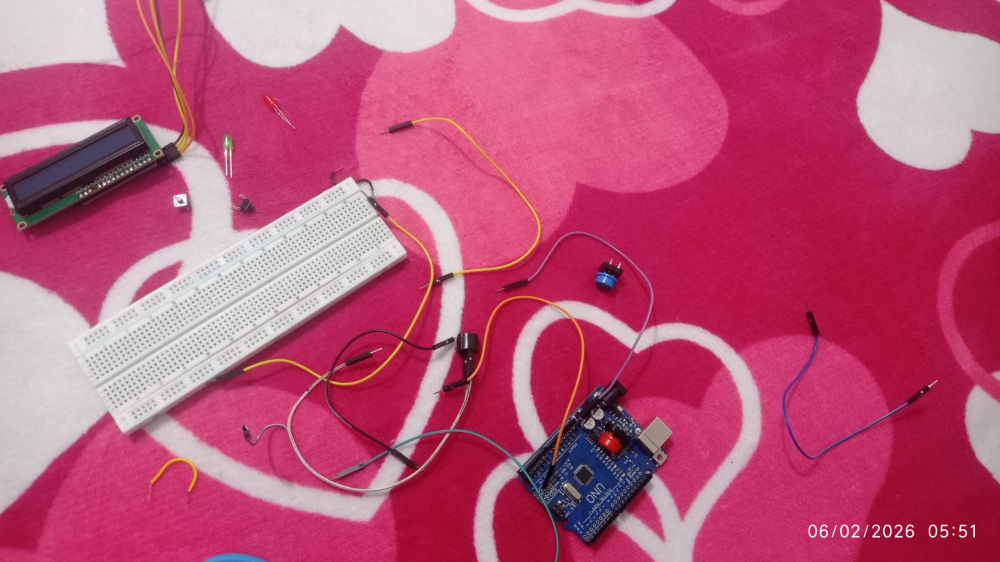 |
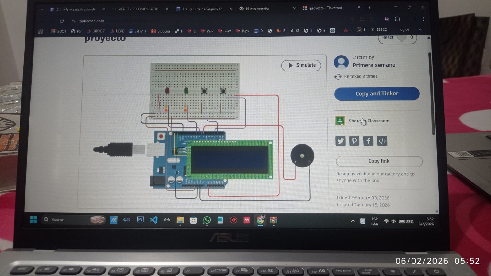 |
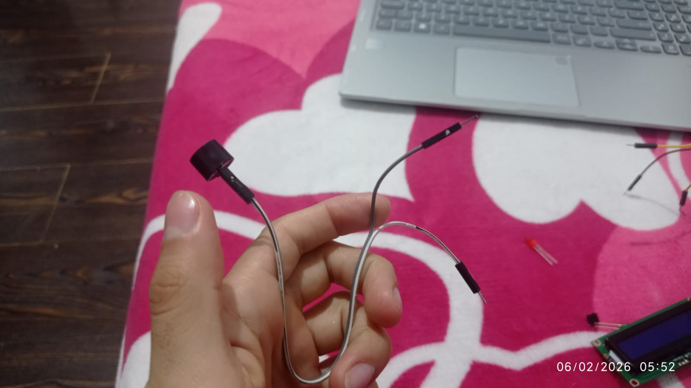 |
| En esta imagen se observan los materiales básicos utilizados para iniciar el proyecto de robótica. Se aprecia una placa Arduino UNO, una protoboard, cables de conexión tipo jumper, resistencias y un módulo LCD. |
En la pantalla de la computadora se visualiza el esquema del Arduino conectado a una protoboard, una pantalla LCD, botones y un buzzer. Este paso corresponde a la planificación virtual del proyecto, donde los estudiantes diseñan y prueban el funcionamiento del sistema antes de armarlo físicamente. |
En primer lugar, se colocan dos cables jumper macho–hembra en los terminales del buzzer, con el propósito de facilitar su conexión externa hacia la placa Arduino. |
| Paso 4 |
Paso 5 |
Paso 6 |
| 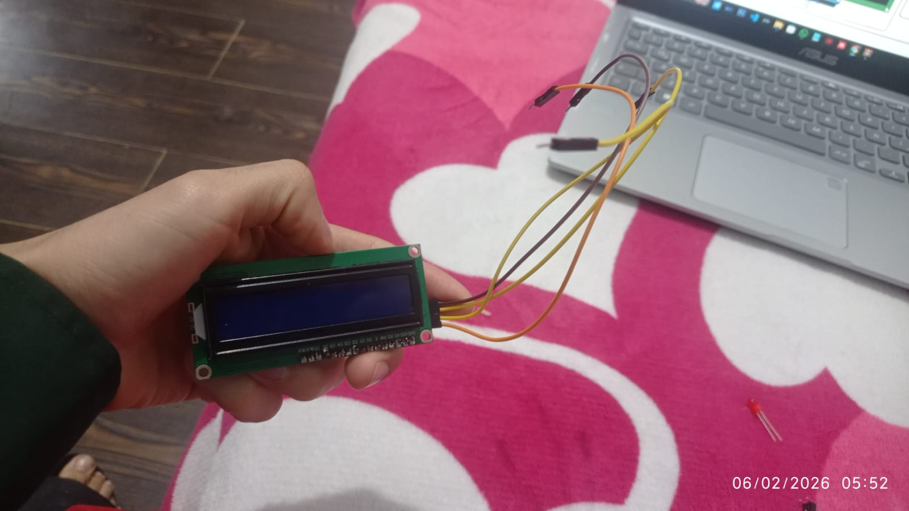 |
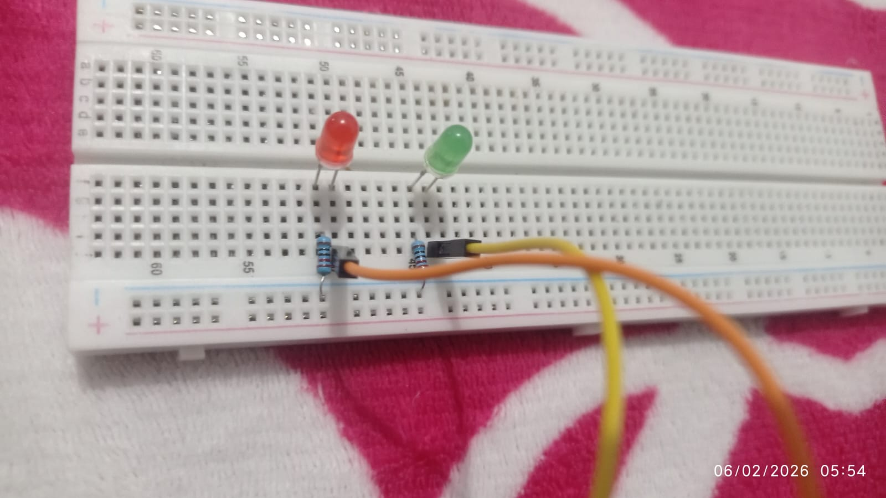 |
 |
| Se conectan los cables de la pantalla LCD a la placa Arduino mediante la protoboard. Se organizan los conductores para garantizar la correcta transmisión de datos y la visualización de información del juego. |
Se colocan dos LEDs en la protoboard junto con sus resistencias. El LED verde se configura para indicar respuestas correctas y el LED rojo para indicar errores durante el desarrollo del juego. |
Se construye la estructura del robot utilizando cartón y materiales reciclados. Se preparan los espacios donde se integrarán la pantalla, los botones y el circuito electrónico. |
| Paso 7 |
Paso 8 |
Paso 9 |
| 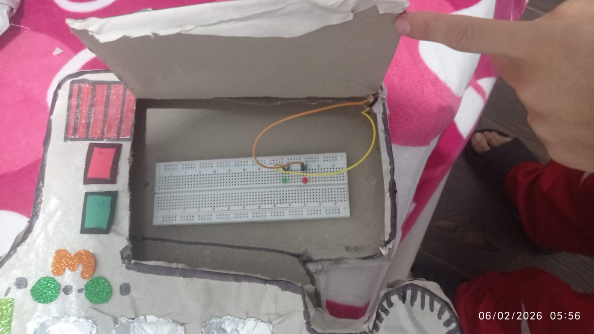 |
 |
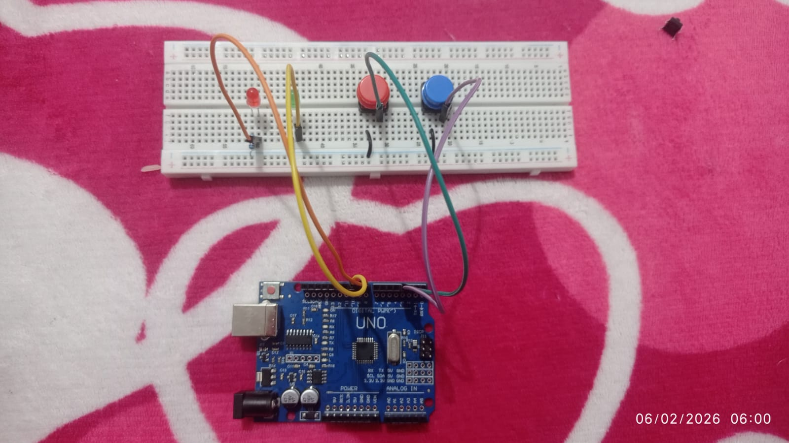 |
| Se coloca la protoboard y los cables dentro de la estructura de cartón. Se organiza el cableado interno para conectar los componentes electrónicos con el diseño del robot. |
Se instalan dos botones pulsadores en la protoboard. Estos botones se conectan al Arduino para permitir el control del inicio del juego y la selección de respuestas. |
Se conectan todos los componentes al Arduino: botones, LEDs, buzzer y pantalla LCD. Se verifica que el circuito esté correctamente armado y listo para cargar el código y realizar las pruebas finales. |
| Paso 10 |
Paso 11 |
Paso 12 |
 |
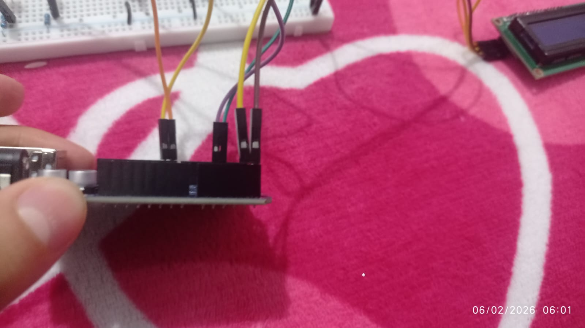 |
 |
| Se conectan los cables jumper desde la pantalla LCD hacia la protoboard. Se ubican correctamente los pines de alimentación y comunicación para preparar la integración de la pantalla con el Arduino. |
Se insertan los cables jumper provenientes de la protoboard en los pines correspondientes del Arduino UNO. Este paso permite establecer la comunicación entre la pantalla LCD y la placa controladora. |
Se conectan de forma definitiva la pantalla LCD y el Arduino mediante los cables ya organizados. Se verifica que los cables estén firmes y ubicados en los pines correctos para garantizar el funcionamiento. |
| Paso 13 |
|
|
| 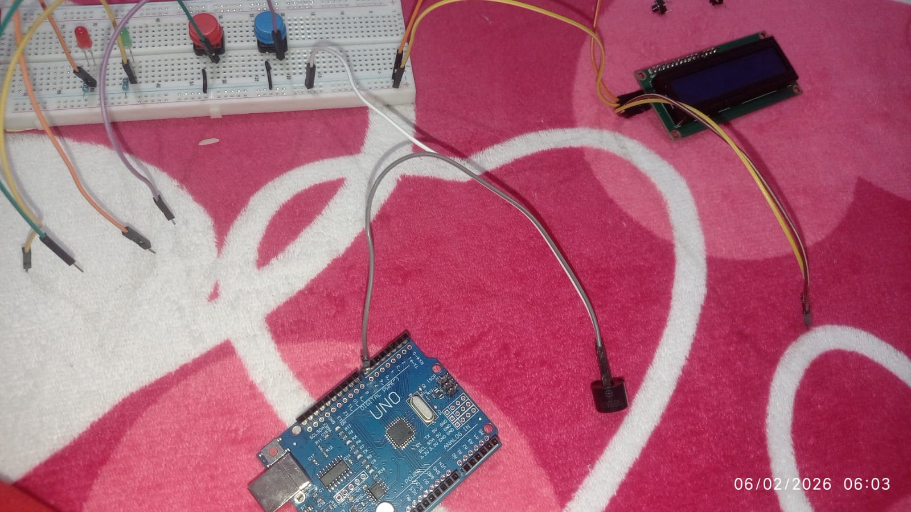 |
|
|
| Se conecta el buzzer al Arduino mediante cables jumper. Se prepara el componente sonoro para que pueda emitir alertas auditivas durante el desarrollo del juego. Luego se unen todos los componentes en un solo circuito: Arduino, protoboard, pantalla LCD, botones, LEDs y buzzer. Se revisan las conexiones finales y se enciende el sistema para comprobar que todo el montaje funcione correctamente. |
|
|
Nota: Despues de finalizar el prototipo, copie el codigo al programa Arduino IDE para que funcione correctamente:
#include <Adafruit_LiquidCrystal.h>
// LCD I2C
Adafruit_LiquidCrystal lcd(0);
// Pines
const int ledError = 8;
const int ledOK = 9;
const int buzzer = 7;
const int botonOK = 2;
const int botonReset = 3;
const int sensorChoque = A0;
// Configuración de la secuencia
const int total = 3;
int secuencia[total];
int paso = 0;
// Rango de números aleatorios (ajusta si deseas)
const int minNum = 1;
const int maxNum = 9;
// ---------- FUNCIÓN PARA GENERAR SECUENCIA ALEATORIA SIN REPETIR ----------
void generarSecuencia() {
for (int i = 0; i < total; i++) {
bool repetido;
int numero;
do {
repetido = false;
numero = random(minNum, maxNum + 1);
for (int j = 0; j < i; j++) {
if (secuencia[j] == numero) {
repetido = true;
break;
}
}
} while (repetido);
secuencia[i] = numero;
}
}
void setup() {
lcd.begin(16, 2);
lcd.setBacklight(1);
pinMode(ledError, OUTPUT);
pinMode(ledOK, OUTPUT);
pinMode(buzzer, OUTPUT);
pinMode(botonOK, INPUT_PULLUP);
pinMode(botonReset, INPUT_PULLUP);
pinMode(sensorChoque, INPUT);
// Semilla para aleatoriedad REAL
randomSeed(analogRead(A5));
generarSecuencia();
lcd.clear();
lcd.setCursor(0, 0);
lcd.print("Saca el numero:");
lcd.setCursor(0, 1);
lcd.print(secuencia[paso]);
}
void loop() {
// SENSOR DE CHOQUE
int valorChoque = analogRead(sensorChoque);
if (valorChoque < 300) {
digitalWrite(ledError, HIGH);
digitalWrite(buzzer, HIGH);
delay(300);
digitalWrite(ledError, LOW);
digitalWrite(buzzer, LOW);
}
// BOTÓN OK (avanza secuencia)
if (digitalRead(botonOK) == LOW) {
paso++;
digitalWrite(ledOK, HIGH);
delay(300);
digitalWrite(ledOK, LOW);
lcd.clear();
if (paso < total) {
lcd.print("Siguiente:");
lcd.setCursor(0, 1);
lcd.print(secuencia[paso]);
} else {
lcd.print("¡Excelente!");
}
delay(500);
}
// BOTÓN RESET (nuevo sorteo)
if (digitalRead(botonReset) == LOW) {
paso = 0;
generarSecuencia();
lcd.clear();
lcd.print("Saca el numero:");
lcd.setCursor(0, 1);
lcd.print(secuencia[paso]);
delay(500);
}
}
 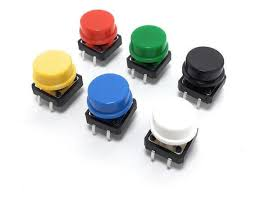
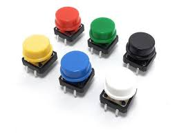